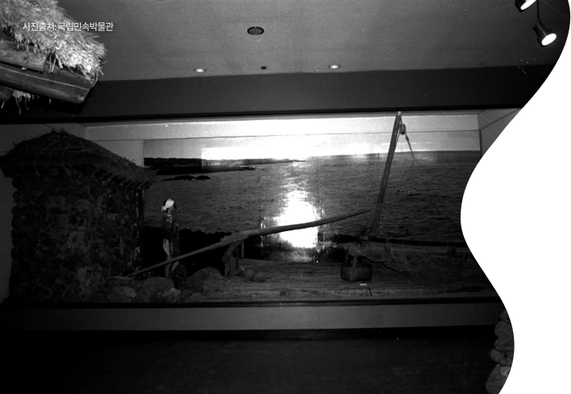
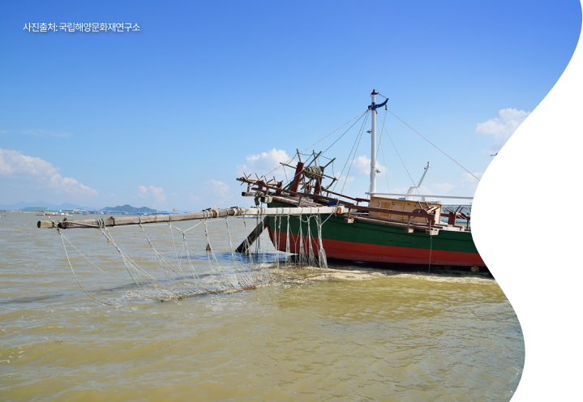
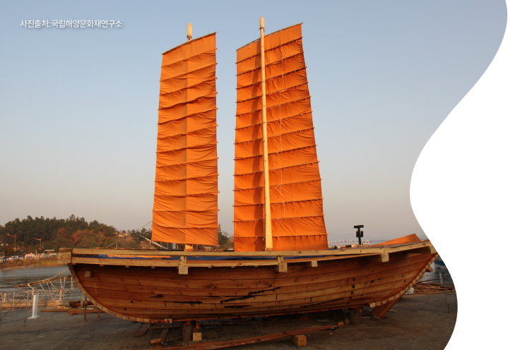
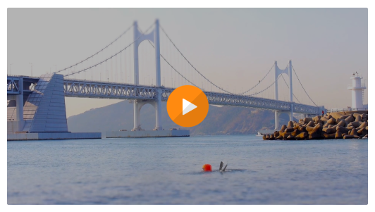

어업은 수산동식물을 채취·포획 또는 양식하는 사업을 말한다. 삼면을 바다로 끼고 살아가는 우리의 삶에 어업은 깊게 연관되어 있다.
생업을 책임지는 어로활동부터 이에 필요한 선박과 어구, 어로문화 그리고 전설까지 어업에 관한 다양한 이야기를 담았다.
그리고 한국을 대표하는 어류, 바닷길의 신호등인 등대와 같이 바다와 어업에 대한 흥미로운 이야기도 함께 소개한다.
어로활동 장소에 따라 달라지는 도구, 어구
바다에 서식하는 생물을 효율적으로 포획하기 위해서는 대상물에 맞는 적절한 도구가 매우 중요하다. 어업에서는 이러한 도구를 어구(漁具)라 칭한다. 일반적으로 어구는 어로활동을 행하는 장소에 따라, 또한 어구의 재질이나 사용 장소, 기능 등에 따라 다양한 형태로 구분할 수 있다.
바다에서 고기잡이를 하는 배, 어선
어선 또한 수행하는 어업의 종류에 따라 크기나 모양이 달라진다. 어선은 상선(商船)에 비해 크기는 작지만, 먼바다에서 오랫동안 능률적으로 어로작업을 수행해야 하므로 선체가 견고해야 한다. 이러한 특징은 우리나라 지역별 개성적인 어선을 통해 살펴볼 수 있다.

제주도 떼배
제주도 지역의 대표적인 선박인 떼배는 8~13개 정도의 통나무를 가지고 만든다. 제주도에서는 테배라 불리는 이 배는 낚시를 비롯해 전복과 해삼 채취 등을 하는데 최적의 선박으로 오랫동안 이용되었다.

낙월도 멍텅구리배
낙월도 멍텅구리배는 혼자서 움직일 수 없는 배다. 동력 없이 망망대해에서 새우를 잡아야 하는 관계로 배를 고정하는 닻이 매우 중요한데 그런 점에서 닻의 크기가 크고 무게가 많이 나간다.

중선망 어선 (서해안 조기중선)
중선망 어선은 조선시대부터 근대까지 사용된 배로, 조수의 간만의 차가 큰 서해안 일대에서 널리 행해지던 어업 방식으로 특히 조기를 잡는데 있어 매우 탁월한 도구로 알려져 있다.
발전하는 어촌, 변화하는 우리의 삶
[도시어부의 삶과 일상]은 현대 항구도시로 변모한 부산 어촌의 현황을 담은 다큐멘터리이다.
부산 수영구는 강과 바다가 인접하여 예전부터 어업이 발달했다. 그러나 어촌이 현대 항구도시로 변모하게 되면서, 어업종사자들의 삶에도 큰 영향을 끼쳤다.
많은 것이 변했지만, 여전히 부산에서 어업을 이어가는 어부와 해녀의 삶을 확인해보자.

영상출처: 도시어부의 삶과 일상, 부산수영문화원
국가중요어업유산 11종
우리나라는 우수하고 고유한 가치를 지닌 어촌자원을 다양하게 보유하고 있다. 하지만 산업화 이후 도시집중과 난개발, 어촌지역의 고령화 등으로 인해 어촌자원과 어업생태계가 훼손·방치되어 그 가치를 상실하고 있다. 국가중요어업유산은 이러한 가치를 보존하고, 자원을 계승하여 어촌 지역경제에 이바지하기 위해 마련된 제도이다.
출처: “국가중요어업유산 가이드라인”, 해양수산부, 2021
서적
자산어보
자산어보는 흑산도로 유배를 간 정약전이 제작한 책이다. 이 책은 흑산도를 중심으로 한 그 일대에서 서식하는 바다 생물을 인류(鱗類), 무인류(無鱗類), 개류(介類), 잡류(雜類)로 구분하여 정리하였다. 이 책은 조선후기의 우리네 어업의 실상을 엿볼 수 있다는 점에서 매우 의미가 큰 책으로 평가받고 있다.
고려도경
『고려도경』은 서긍이 중국 송나라 시기에 여러 사신들과 배를 타고 오늘날 인천에 해당하는 송도를 다녀갔는데, 이 과정에서 보고 들은 내용을 소상히 기록해 놓은 것이다. 이 책은 40권 29류로 구성되어있으며, 이 책의 가장 큰 특징은 글자 기록과 함께 일부 내용은 그림으로 표현해놓은 것이다.
우해이어보
우해이어보는 진해 지역의 바다생물을 소상하게 기록해 놓은 책이다. 이 책에는 53종의 어류와 8종의 갑각류, 그리고 10여 종의 패류가 기록돼 있다. 바다 생물의 이칭과 습성, 그리고 생김새를 비롯해 잡는 방식과 유통 등에 대해서 상세히 기록해 놓았다는 점에서 좋은 평가를 받고 있다.
지도군총쇄록
『지도군총쇄록』은 19세기 말의 자료로 오늘날 신안군 지역에 해당하는 당시 지도 지역의 다양한 모습을 기록해 놓은 책이다. 이 책의 저자인 오횡묵은 서울에서 출발하여 지도군까지 배를 타도 오는 일련의 과정과 지도군수로 있으면서 그가 여러 섬을 다니며 했던 일들을 이 책에 기록해 놓았다.
전설